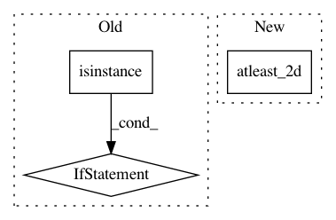

b5264000f20db429a3bd371ec66178c9fb49e5ce,Orange/distance/distance.py,SpearmanModel,compute_correlation,#SpearmanModel#Any#Any#,434
Before Change
class SpearmanModel(CorrelationDistanceModel):
def compute_correlation(self, x1, x2):
rho = stats.spearmanr(x1, x2, axis=self.axis)[0]
if isinstance(rho, np.float):
return np.array([[rho]])
slc = x1.shape[1 - self.axis]
return rho[:slc, slc:]
After Change
if np.isscalar(rho):
// scalar if n1 + n2 <= 2
assert n1 + n2 <= 2
return np.atleast_2d(rho)
else:
assert rho.shape == (n1 + n2, n1 + n2)
return rho[:n1, n1:].copy()
In pattern: SUPERPATTERN
Frequency: 3
Non-data size: 3
Instances
Project Name: biolab/orange3
Commit Name: b5264000f20db429a3bd371ec66178c9fb49e5ce
Time: 2018-01-16
Author: ales.erjavec@fri.uni-lj.si
File Name: Orange/distance/distance.py
Class Name: SpearmanModel
Method Name: compute_correlation
Project Name: biolab/orange3
Commit Name: b6a4b26ea39c634adfc46b064375f4af30b7e7a3
Time: 2014-12-19
Author: niko.colneric@gmail.com
File Name: Orange/distance/__init__.py
Class Name: Jaccard
Method Name: __call__
Project Name: befelix/safe_learning
Commit Name: 95391f618b7fe48dfd7fff63917036f447c0b621
Time: 2017-02-03
Author: fberkenkamp@gmail.com
File Name: safe_learning/utilities.py
Class Name:
Method Name: linearly_spaced_combinations